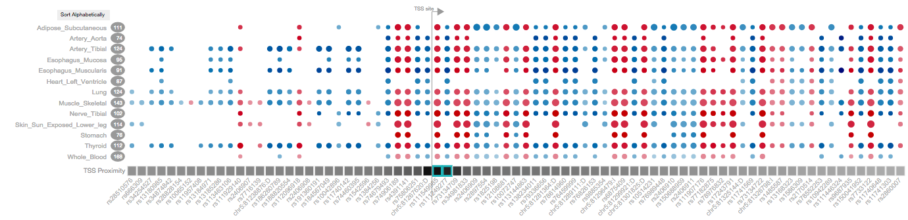
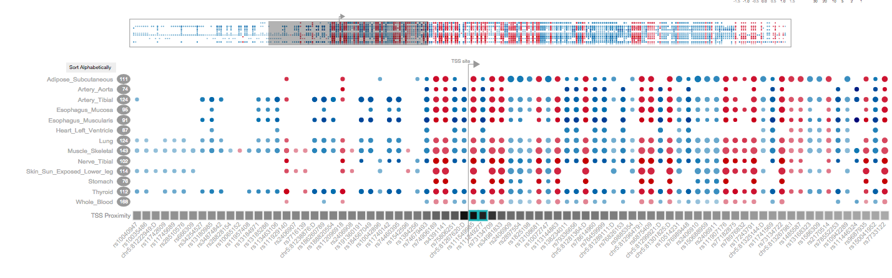
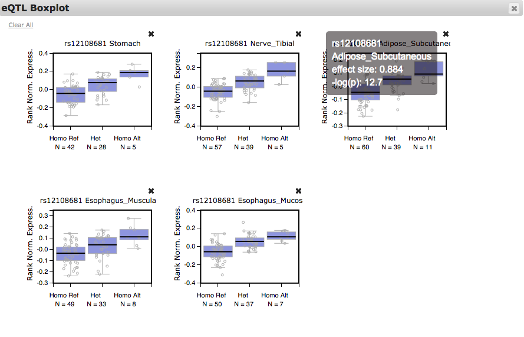
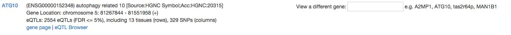
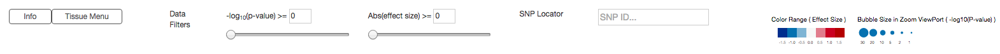
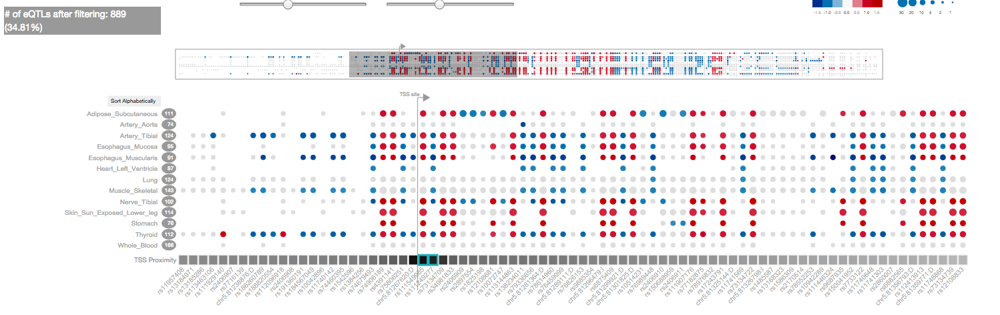
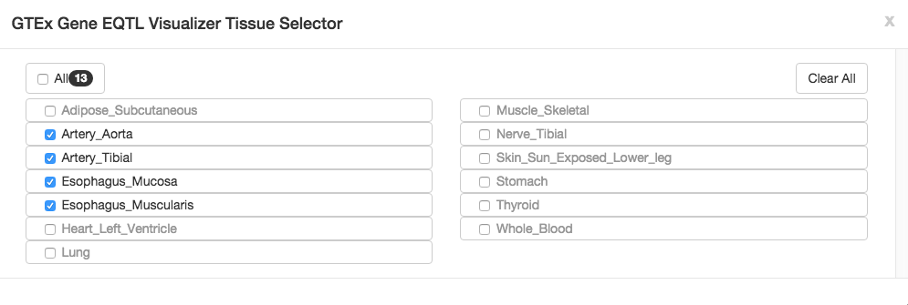
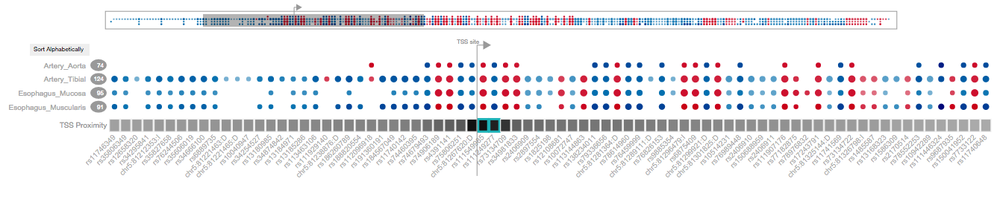
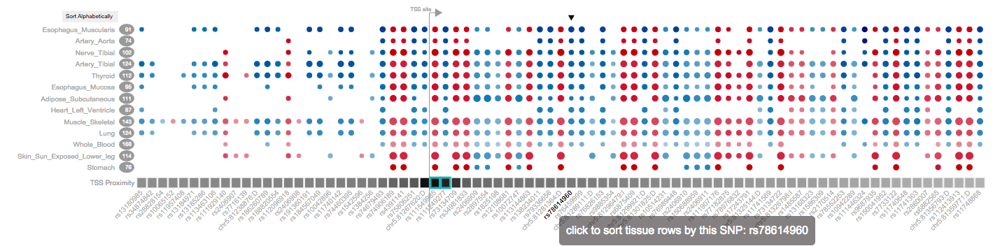

Gene eQTL Visualizer (GEV) is a web-driven visualization tool that visually summarizes the eQTL results of a single query gene in a heat map.
The columns are SNPs, by default, sorted by chromosome positions, rows are tissues in alphabetical order. Only SNPs and tissues that have eQTLs
associated with the query gene are reported in the heat map, thus each gene's heat map dimensions varies.
When an eQTL is present in a tissue and of a SNP, it appears as a circle on the heat map. Two visual properties of the circle, color and size, are used to represent the effect size and p-value of the eQTL results, respectively.

The Zoom Lens and Viewport
GEV attempts to fit the entire heat map into the browser window,
so that one can observe global trends and patterns without scrolling. However, the trade-off is that the heat map can become too small
to allow closer examination.
Therefore, a shaded box that serves as a zoom lens is provided on the heat map and shows a partial region of the map in the zoom viewport.
One can browse the heat map in the zoom viewport by
dragging the zoom lens along the heat map, or click anywhere of interest on the heat map. The area of the zoom lens can be modified by dragging
the vertical edges of the rectangle box,
which essentially changes the width of the zoom viewport.

Interactive Mouse Events
Interactive mouse events are implemented in the zoom viewport to allow closer data exploration at a finer resolution on the heat map.
Mousing over a bubble or text label will trigger the info tooltip to appear.
Clicking on a bubble will show its eQTL box plot in a pop-up window that is draggable and can be re-sized. Multiple eQTL boxplots can be added to the box plot window.
Mousing-over each box plot will show the tooltip with eQTL information and will highlight the corresponding bubble on the eQTL bubble heat map.

The Info Panel
In the info panel, the basic information of the query gene is provided. Links to the gene page and eQTL IGV browser are also conveniently provided.
To view the eQTL results of a different gene, use the search box to fetch the gene of interest by gene symbol or ENSEMBL ID.

The Control Panel
In the control panel, the user can find the tissue menu for custom tissue selection, use the data filters to filter eQTL results,
use the SNP locator to search SNPs on the heat map and view the color and bubble size legends.
The color and size scales are global, which means that GEV uses the same scales to render the eQTL results from all genes.
The size scale legend only describes the heat map in the zoomed viewport.

Data Filtering By P-Value or Effect Size
The eQTLs can be filtered on the heat map by a user-defined p-value and/or effect size threshold. The eQTLs that are filtered will appear in a light grey color on the heat map.

The Tissue Selection Menu
The tissue menu can be summoned by clicking the button located at the upper left corner in the GEV. One can custom-select tissues to view in the heat map.


Sorting of The Tissue Rows
Tissue rows are by default displayed in the alphabetical order. Alternatively, they can be sorted by the effect size data (not p-values) of a selected SNP.
To sort based on the effect size data of a SNP, simply click the SNP column label.
After the sorting is completed, a black upside-down triangle will appear, which marks the SNP column that is used to sort the tissue rows.

Additional Visual Components
GEV is much more than just rendering a gene's eQTL results in a summary heat map. It visually enriches the heat map further with additional meta data of tissues, and genomic and annotation information of the SNPs and gene.
The sample size of each tissue is a critical piece of information for the evaluating the significance of eQTL results, therefore the number of samples (with genotype) in a tissue is conveniently provided next to each tissue name.
GEV also uses a grey-scale 1D heat map to show the transcriptional start site (TSS) proximity of SNPs. Each SNP is represented as one rectangle box on the heat map. The closer a SNP is to the TSS, the darker the box is. This 1D TSS proximity heat map shares the same SNP columns with the eQTL bubble heat map, therefore, the two heat maps can be stacked and aligned vertically.
The TSS is drawn as a flag, it is rendered between two closest upstream and downstream SNP columns. The direction of the TSS flag indicates the transcriptional direction, for a gene on the plus strand, the flag points to the right.
When a SNP falls within an exon region of the gene, its broader on the 1D TSS proximity heat map